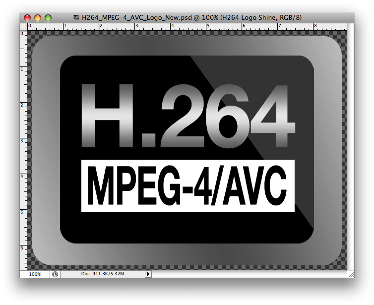

1.3.2. Códecs
- El término códec procede de las palabras CODificador/DECodificador. Cada códec está constituído por un conjunto de librerías que implementan diferentes algoritmos. El objetivo fundamental de estos algoritmos es la compresión y decompresión de audio y vídeo digital.
- Un ejemplo de códec de audio es MP3 y de códec de vídeo es Xvid.
- Un contenedor es un tipo de archivo cuyo cometido es almacenar información. Por ejemplo: el formato contenedor AVI puede contener datos de audio en MP3 y de vídeo en DivX, lo que hace posible almacenar un vídeo en el que la imagen y el sonido estén sincronizados. Es importante no confundir este concepto con el de códec; un contenedor sólo almacena la información y un códec es un elemento software que la transforma, no almacena nada.
Información tomada de http://www.atc.uniovi.es/inf_med_gijon/3iccp/2005/trabajos/codecs/
La mayor parte de la compresión se consigue mediante dos técnicas.
-
Primera técnica ("Lossy Data Compression"): consiste en poner cada cierto número de imágenes (frames) un fotograma completo, y en puestos intermedios, ir eliminando distintas partes en las que no haya movimiento, como por ejemplo los fondos. Así, al hacerse pasar los distintos frames muy rápido, el espectador no notará que las imágenes no están completas una a una.
-
La segunda técnica ("Lossless Data Compression") explota una propiedad del ojo humano; éste es más sensible a cambios rápidos de brillo que de color, por lo que se pueden eliminar componentes de color sin perder en calidad en la percepción.
-
H.264: También conocido como MPEG4 AVC o MPEG4 Part 10, este codec fue diseñado para sustituir a formatos como MPEG2 o MPEG4 Layer 2, consiguiendo un vídeo de alta calidad con unas tasas de bits sustancialmente inferiores a anteriores codecs. Ha sido incluido en los estándares de vídeo de alta definición HD-DVD y BluRay.

Comprensión con pérdida de información: "Lossy Data Compression" es el tipo de codificación más típica, ya que se reduce la cantidad de información requerida para hacer llegar al destinatario una imagen en movimiento. Se puede optar por una transformación de la información original en otra más simple, reduciendo la tasa de bits necesaria para ser transmitida, o por la reducción de información a través de la predicción de los cambios en la imagen, enviando tan solo los cambios existentes de un fotograma a otro.
-
MPEG4 ASP: También conocido como MPEG4 Part 2, es uno de los más utilizados en alguno de sus "sabores" comerciales: DivX (o su clon gratuito Xvid), o sobretodo por los codecs libres FFmpeg MPEG4. Es un codec muy popular para la distribución de vídeo a través de Internet.
-
H.261/H.263/H.264: Diseñados originalmente para su uso para videoconferencia, estos formatos han sido la base de aplicaciones como el Flash Video, y los codecs de RealVideo hasta hace poco, quedando sustituidos por el codec VP6 en el caso de Flash, y en codecs propietarios en el caso de RealVideo, que ofrecen mayor calidad para tasas de bits bajas.
-
Cinepak: Incluído en el paquete inicial de codecs para el formato Quicktime de Apple, y basado en cuantización vectorial (a diferencia de la inmensa mayoría de codecs actuales, basados en transformación discreta de cosenos), este formato ha quedado obsoleto.
-
MPEG 2: Es uno de los codecs más utilizados en la codificación de películas, y es utilizado tanto en la emisión digital a través de redes terrestres o satelitales, así como en los DVD-Vídeo.
-
Windows Media: El codec de Windows Media Video es la apuesta de Microsoft . Está diseñado para competir con DivX y MPEG4 AVC.
-
VC-1: Microsoft también apostó por el VC-1, también conocido como SMPTE 421M, y basado en el Windows Media Video 9. Es el codec oficial de la Xbox 360 y ha sido tomado como estándar para los reproductores HD-DVD y BluRay.
Este artículo está licenciado bajo Creative Commons Attribution-NonCommercial-ShareAlike 2.5 License
Jo.R.C.A. 2004 - 2010

Edición de Audio y Video con Software Libre by José Ramón Cerdeira Alonso is licensed under a Creative Commons Reconocimiento-No comercial-Compartir bajo la misma licencia 3.0 España License